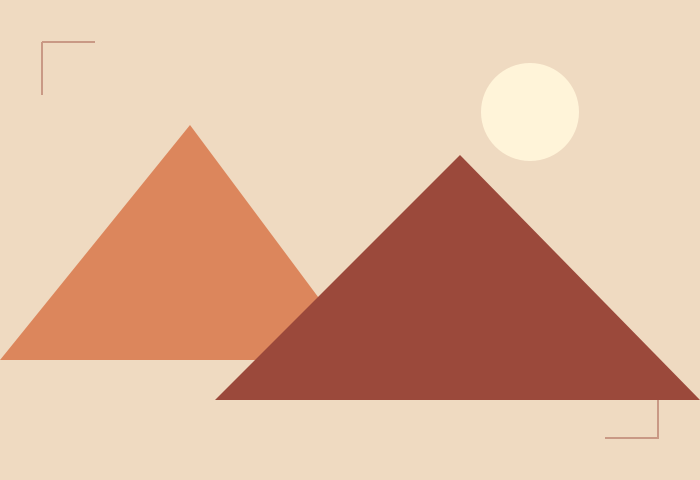
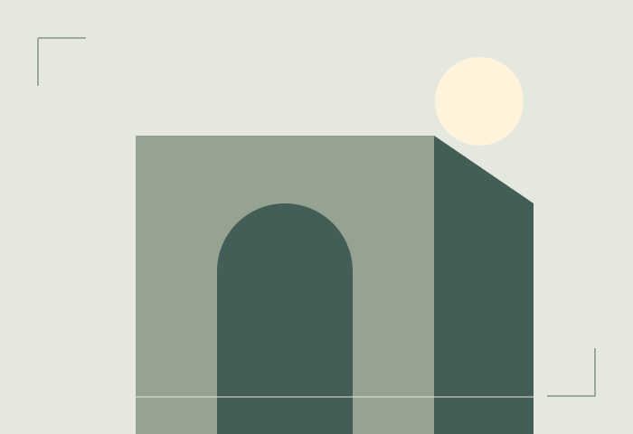
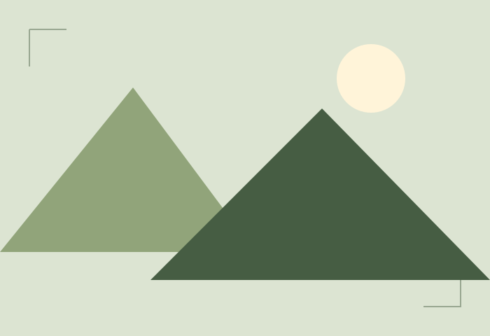
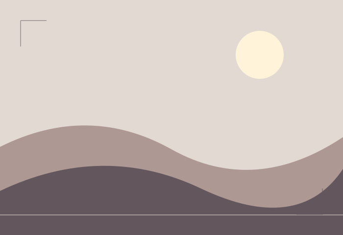
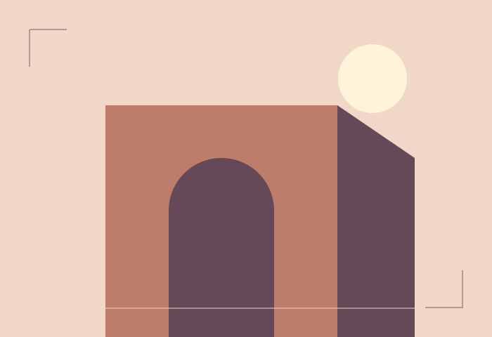

Assignment #2 / Task 3 · CSS Grid
A collection of quiet moments.
Nine original geometric illustrations. Hover over a study or focus it with the Tab key to reveal its title.








A palette of places, real and imagined. Original SVG illustrations created for this assignment.